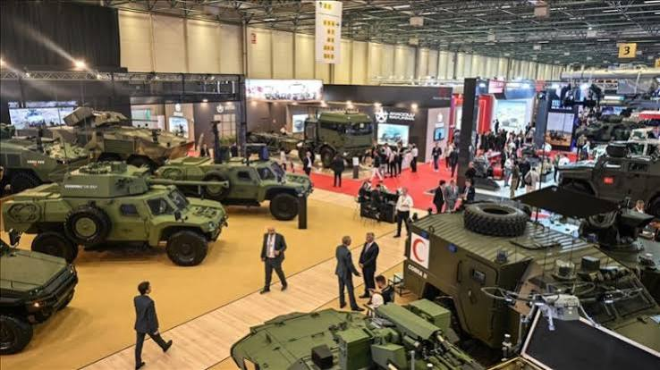

Defence Exhibition Organisation is an autonomous organisation of the Indian Government established in 1981.[1] The organisation's main charter is to organise and coordinate Aerospace and Defence (A&D) exhibitions in India and aboard.[2] The agency is responsible for organising international exhibitions such as DefExpo and Indian participation at overseas exhibitions such as Aero India and DefExpo.[2] The DEO is also involved in coordinating and the setting-up of "India Pavilion" at major international Aerospace & Defence exhibitions abroad in order to improve the export potential of the Indian Aerospace & Defence Industry
